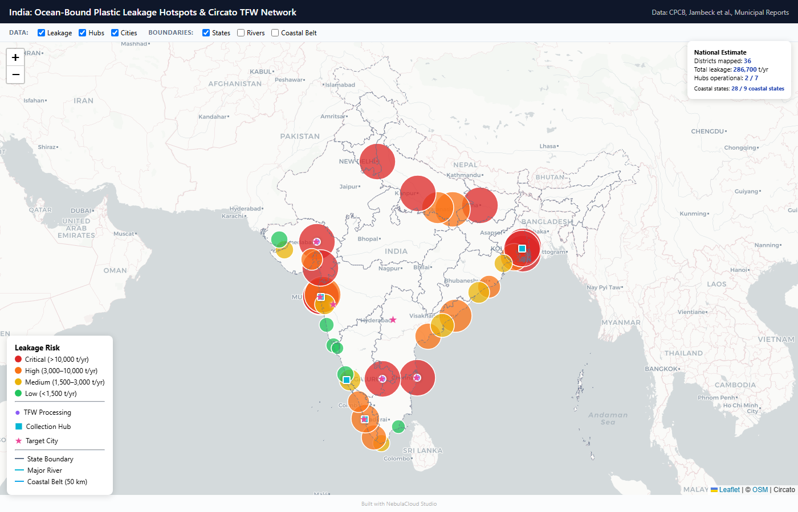
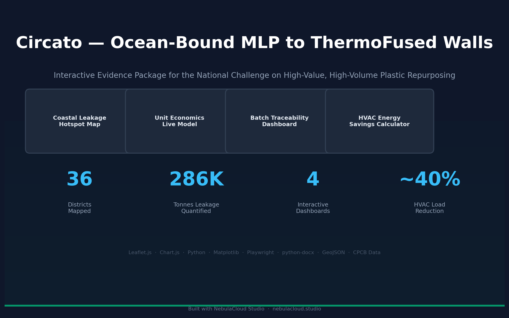

CIRCATO — Ocean-Bound Plastic to ThermoFused Wall Evidence Package
A multidisciplinary digital demonstrator created using NebulaCloud Studio
Geospatial Analysis
Commercial Modelling
Material Traceability
Thermal Performance
Evidence Generation
Private interactive demo — access available upon request. The complete interactive demonstrator is maintained privately by NebulaCloud Studio and is no longer publicly accessible.
Coastal Leakage Hotspot Analysis
Interactive geospatial mapping of 36 Indian coastal and river-linked districts with quantified plastic leakage risk tiers, state boundaries, and 14 major river systems.
Unit Economics Modelling
Live cost-to-revenue model with adjustable parameters, sensitivity analysis, and automated viability assessment for MLP-to-TFW conversion.
Batch Traceability & EPR Workflow
End-to-end batch tracking from waste collection through processing to construction delivery, demonstrating EPR-compatible architecture.
HVAC & Thermal Performance
Comparative thermal performance calculator comparing TFW panels against clay brick, AAC block, and concrete across five Indian climate zones.
Request access to the interactive demonstrator
The complete interactive demonstrator is available for controlled evaluation. Access may be provided to prospective customers, technical partners, investors, programme evaluators, and other qualified stakeholders.
Project Screenshots


Independent technology demonstrator. This is an independent technology demonstrator created by NebulaCloud Studio using publicly available information and representative assumptions. It is not an official CIRCATO or Unified Intelligence application and does not imply endorsement, partnership, certification, or validation by the respective organisation. Product names and trademarks remain the property of their respective owners.
The public case study is provided for demonstration purposes only. The complete interactive models, implementation, datasets, reports, and project workflows are not publicly distributed. Publicly displayed materials may be viewed for evaluation and informational purposes. No permission is granted to reuse, reproduce, commercialize, redistribute, or create derivative works from NebulaCloud-created showcase content except where separately permitted by an applicable third-party licence.
This project demonstrates how NebulaCloud Studio can transform a complex industrial or sustainability concept into a working digital evidence package spanning research, modelling, geospatial analysis, application development, documentation, and verification.